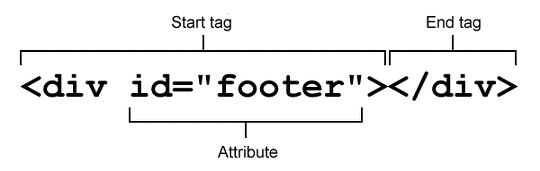

HTML이란?
HTML(HyperText Markup Language)은 World Wide Web(www)을 위한 마크업 언어이며, 제목이나 문단, 표, 꼬리글 및 기타 요소를 이용하여 콘텐츠의 구조를 정의함으로써 웹 문서를 만드는 기능을 제공합니다.
HTML의 역사
HTML의 기술 발전의 역사는 때로는 무질서해 보이고, 이익집단과 결부된 양상을 띄기도 했습니다. 현재에는 W3C에서 명세를 관리하고 브라우저 개발자들이 그것에 기인해 브라우저를 만들어 어느정도 표준화가 이루어지고 있습니다. 다만 IE의 구버전의 난립과 뒤쳐지는 표준화 기술은 여전히 문제로 자리잡고 있지요.

- ㉠ 팀 버너스리에 의해 설계되어 HTTP, URI, 브라우저와 함께 1990년에 개발
- ㉡ 1993년 버전 1.0이 표준으로 등장, IETF(Internet Engineering Task Force)에서 관리
- ㉢ 버전 2.0은 RFC로서 표준화 (1995년)
- ㉣ 버전 3.2 이후에는 W3C가 표준 관리 (1997년)
- ㉤ 1999년 HTML 4.01이 권고
- ㉥ 2000년 XHTML 1.0
W3C는 HTML의 표준을 더는 업데이트하지 않을 것을 선언 (1998년)
XHTML의 웹 표준화에 노력하였으나 반응은 미비
WHATWG의 탄생
Apple, Mozilla, Opera는 공동으로 WHATWG(Web Hypertext Application Technology Working Group) 발족 (2004년)
널리 보급된 HTML에 기초하여 브라우저에 실제 구현된 기능을 중시, 현실적인 접근법을 채택
W3의 방침 전환 그리고 HTML5의 표준화
2007년 W3C는 WG를 발족하고 WHATWG와 공동으로 HTML5 제정에 합류
2008년 1월 HTML 5 초안 공개
2009년 7월 XHTML 2.0의 사양제정 중지
요소와 태그, 그리고 속성
하나의 문서는 제목, 내비게이션, 본문, 하이퍼링크, 리스트, 컨트롤 등 다양한 구성요소로 이루어지는데, 이것을 표시하기 위한 것이 바로 요소(element)입니다. 요소는 태그(tag)로 표시하며, 브라우저가 구성요소의 범위를 파악할 수 있도록 시작 지점은 시작 태그(start tag), 종료 지점은 종료 태그(end tag)를 사용합니다. 태그의 시작은 < 표식에서 부터 시작됩니다. 흔히 브라켓(bracket)이라고 부르지요.
요소는 단순히 구성 요소의 종류와 그 범위만을 표시합니다. 어떤 사람의 이름이나 성별만으로는 그 사람을 제대로 설명하기 어렵듯이 구성 요소의 종류와 그 범위만으로는 해당 구성 요소를 제대로 표현하기 어렵습니다. 이 점을 보완하기 위해 속성(attribute)의 개념을 사용합니다. 속성은 요소를 표현하기 위한 옵션 정보로서 요소가 지니고 있는 성질을 추가로 설명합니다. 속성은 요소의 시작 태그 내에 작성되며 속성 이름(attribute)과 값(value)이 한 쌍으로 구성됩니다.
태그들 가운데 쌍을 이루지 않고 혼자서 그 쓰임을 다하는 것들이 있는데, 예로 <meta/>, <img/> 가 있으며, 이들을 홀태그라 부릅니다. XHTML에서는 이들의 끝맺음을 꼭 해야 합니다!
부모 요소와 자식 요소
요소는 하나 이상의 다른 요소를 포함할 수 있습니다. 부모 요소(parent element)는 다른 요소를 포함하고 있는 요소이며, 자식 요소(child element)는 부모 요소에 포함된 요소를 말합니다. 위계적으로 보면 부모 요소는 상위 레벨의 요소, 자식 요소는 하위 레벨의 요소라고 볼 수 있습니다.
HTML 문서에서 최상위 레벨의 요소를 루트 요소(root element)라고 부르는데 <html>요소가 이에 해당합니다. 루트 요소는 자식 요소만 가질 수 있으며, 모든 요소의 부모 요소가 됩니다. 포함 관계는 부모-자식 관계, 병렬 관계는 형제 관계를 이루게 됩니다. 부모 요소에 적용된 속성은 자식 요소로 상속되며 자식 요소에 적용된 속성은 부모 요소로 역상속 되지는 않습니다.

블록 레벨 요소와 인라인 요소
웹문서를 작성할때 각 태그마다 가지는 일종의 서식이 있습니다. 이는 브라우저마다 그 표현이 다르고, 또 근래의 HTML5에 와서는 그런 기본적인 서식을 제공하지 않는 추세로 바뀌어 가고 있습니다(요소들이 본연의 구조적인 역활만을 하도록 하기 위함).
블록(block) 레벨 요소
기본적으로 넓이를 100%를 유지하는 박스형태의 서식을 가지며, 블럭요소 뒤에 오는 요소는 줄바꿈 되어 표시됩니다.
- BODY 요소 안에서만 사용할 수 있다.
- 인라인 요소와 다른 블록 레벨 요소를 포함할 수 있다.
- 새로운 행에서 시작한다(줄바꿈).
- 인라인 요소보다 더 큰 구조를 만드는데 사용한다.
address, article, aside, audio, blockquote, canvas, dd, div, dl, figcaption, figure, footer, form, h1~h6, header, hr, noscript, ol, output, p, pre, section, table, tfoot, ul, video
인라인(inline) 요소
블럭요소 안에 위치하며 줄바꿈없이 표시됩니다.
- BODY 요소안에서만 사용할 수 있다.
- 데이터와 다른 인라인 요소만 포함할 수 있다.
- 새로운 행에서 시작할 수 없다(줄바꿈 되지않음).
- 텍스트 레벨 요소라고 부른다.
a, abbr, acronym, b, bdo, br, button, cite, code, dfn, em, i, img, input, kbd, label, map, object, q, samp, script, select, small, span, strong, sub, sup, textarea, var